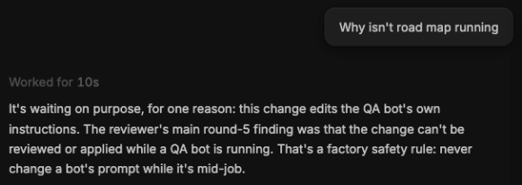

PROJECT · HOW THESE TOOLS SHIP
Software factory
One agent writes a change, a different one tries to break it, and nothing merges until it passes.
sca-triage, sast-triage and this website are built and released by a pipeline of AI agents I designed. This page explains how it works, what its checks have caught, and which decisions stay with me.
How these tools ship
A coordinator agent picks up the next item on a roadmap I approved. One agent writes the change, a different one tries to break it, and nothing merges until it passes. Product and security decisions stay with me.
- 1 in 3
QA runs sent a change back before it could merge.
8. Numbers so far - Every release
Verified from a user’s side before it counts.
Latest sast-triage release - 3 models
Builders run on two Claude models, and every change is checked by a third model from a different vendor.
2. Architecture - Self-gated
sast-triage scans every pull request to this website and both tools.
7. Safety by design
1. Why
I build two open-source security tools, sca-triage and sast-triage, and this website. The tools existed before the factory. Its first scheduled run was on November 11, 2026, Toronto time.
I set it up so that no change ships on its author’s word. Every change passes checks by an agent that did not write it, and the decisions that matter stay with me: what to build, when a version is major, what goes to npm, and how a security problem is disclosed.
2. Architecture
One coordinator agent schedules and routes the work, three times a day and whenever an agent finishes. Specialist agents each have one job and a written contract, their instructions: Feature (roadmap items), Fix (bugs), QA (the independent checker), Release (prepare, verify, publish), Security review, Quality review, Audit, Prompt review, Market research and Roadmap. The reviewers are described in section 5.
Each job runs in its own fresh cloud sandbox and ends with a report in a fixed format. No agent keeps the state in its memory. It lives in a private repository: the work items, the jobs, which agent holds which repository, every decision I made, in my exact words, and every lesson learned.
The builders, the Feature and Fix agents, run on Claude Opus 5.5 for designs and security fixes and on Claude Sonnet 5.5 for routine work. QA runs on GPT-6-Astra from OpenAI, or on Grok 4.7 from xAI through Cursor when Cursor has capacity, so every change is checked by a model from a different vendor than the one that wrote it. Prompt reviews run on GPT-6-Astra, and the factory audit runs weekly. Until the evening of November 12, 2026, the builders ran on Claude Fable 5.2 and QA on Claude Opus 5.5. A usage limit on Fable prompted the switch.
3. The life of a change
- A change starts as an item on a roadmap I approved, such as the sast-triage roadmap, or as a bug.
- The Feature agent (roadmap items) or the Fix agent (bugs) opens a draft pull request with tests that fail before the change and pass after it.
- The QA agent tries to break the change at that exact commit. It never sees the builder’s thread. If QA fails the change, it goes back to the builder, and the corrected commit needs a PASS of its own.
- On a PASS, the coordinator merges the change with a squash pinned to the tested commit, then confirms that the merged tree is the tree QA tested.
- The Release agent prepares the release and an independent verifier checks it. The release is published, then verified from a user’s side: a separate test repository uses the tool, pinned first to the release commit and then to its tag.
- For this website, the deploy reads the new release and updates the version labels and the release pulse by itself.
4. The gates and what they caught
Four rules block a change:
- No merge without a QA PASS at the exact head commit of the pull request.
- No release without preparation and independent verification.
- Nothing ships to npm or as a minor or major version without my walkthrough.
- One writer per repository at a time.
Public examples you can open:
- dotrobin-dev #41, the homepage proof panel: three bot corrections before QA passed it.
- sca-triage #13, the npm publish workflow: QA failed it twice before it merged.
- sast-triage #131, the go-live checklist: QA found a contradiction between two documents that the builder had missed.
- sca-triage #14, the README: QA caught a sentence that overstated what a test checks.
- dotrobin-dev #40: sast-triage now scans every pull request to this website, as a required check.
- sast-triage #137: sast-triage now scans every pull request to its own repository, as a required check.
5. The always-on reviewers
- Security review, every week, covers the code and the dependencies. A confirmed weakness is fixed privately, in a GitHub security advisory fork, before anything is public.
- Quality review looks for bugs and drift in shipped code.
- Audit, every week, checks that the factory followed its own rules.
- Prompt review: no agent’s instructions change without an independent review. The prompt reviewer cannot approve changes to its own rules. Those need a one-off reviewer on another model, plus me.
6. What stays with me
- Product and roadmap decisions.
- Minor and major versions.
- Publishing to npm.
- Credentials.
- Security disclosure.
A question is never treated as an approval. Every approval is recorded with my exact words.
7. Safety by design
- Least privilege: CI tokens are read-only, and agents that do not need secrets do not get them.
- Everything an agent reads in a repository or on the web is data, never instructions.
- No force-pushes. Merges are pinned to the commit that was tested.
- Every tool in CI is pinned to a full commit SHA, as in this website’s site checks.
- The factory’s own tools check its work: a sast-triage scan runs on every pull request to sast-triage, sca-triage and this website, and it is a required check on all three (dotrobin-dev #40, sast-triage #137).

8. Numbers so far
As of November 20, 2026, counted that morning, Toronto time.
| Measure | Number |
|---|---|
| First scheduled run | November 11, 2026 |
| Releases since then | 14: sast-triage v2.1.1 to v2.6.4 (thirteen) and sca-triage v1.3.0 |
| Pull requests merged since then | 100: sast-triage 43, sca-triage 8, dotrobin-dev 49 |
| Finished independent QA runs | 356 |
| QA runs that failed a change and sent it back | 111, about one in three |
The QA counts come from the factory’s own records. The pull requests and releases are public on GitHub.
9. What went wrong and what changed
- A model usage limit stopped two builders in the middle of a job. Switching one of them to another model gave it a fresh workspace, and its unpushed work was lost. Builders now push unfinished work as a draft before their time limit runs out.
- A change to the agents’ own rules took six review rounds before it was allowed to go live. Instruction changes are now batched into one review a day.
- The recorded hash of a published package could not be rebuilt on another machine, because compression differs by platform. The content check now uses file-by-file hashes.
- The coordinator’s hand-run bookkeeping made small slips, a mangled brief and a wrong thread ID, which its own checks caught.
Every lesson is recorded, and the instructions are improved in a daily maintenance window.
10. What’s next
- Measuring the factory itself: QA first-pass rate, bugs found after a release, correction rounds per pull request, and time from roadmap item to release, reported daily.
- Testing the tests: scheduled mutation testing, and property-based and fuzz tests for the parsers: lockfiles, SARIF, git diffs and scanner output.
- Roadmaps backed by research.